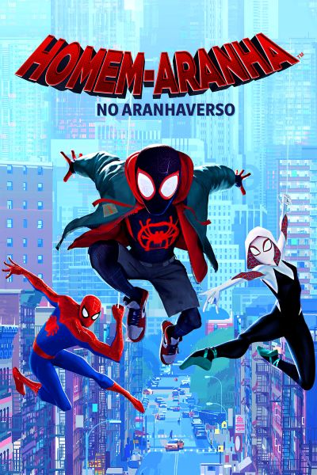
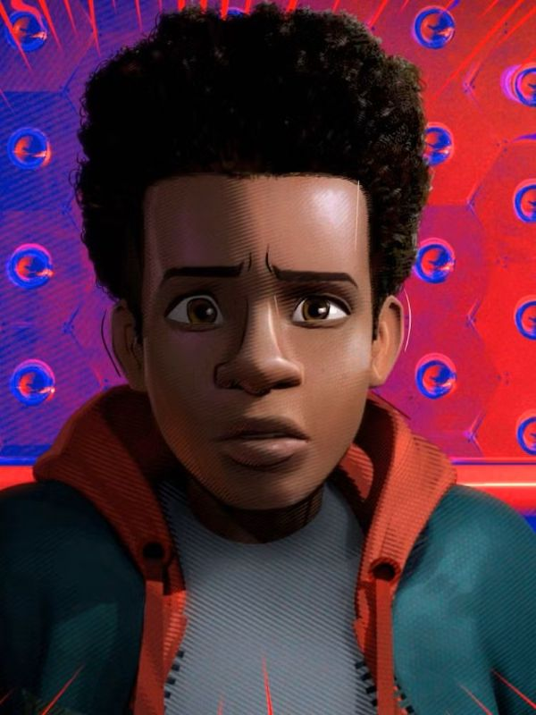
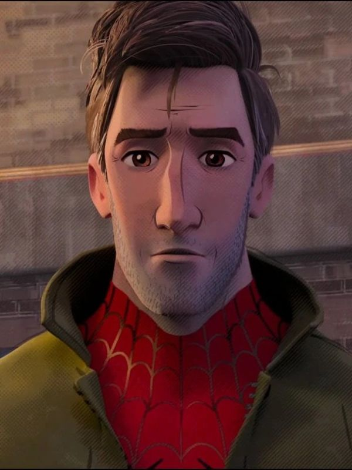
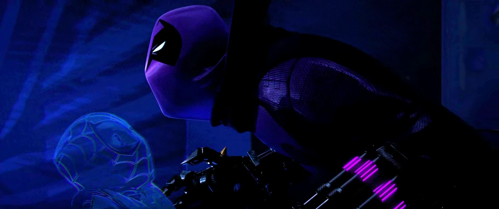
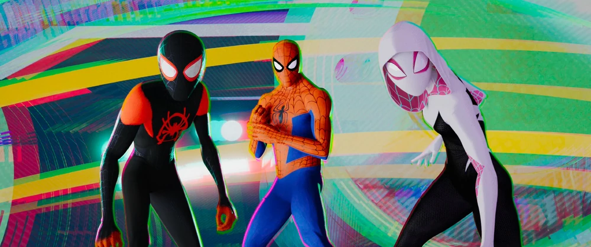
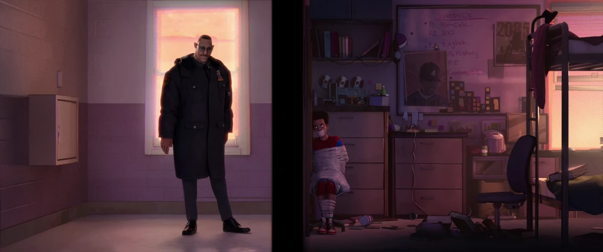
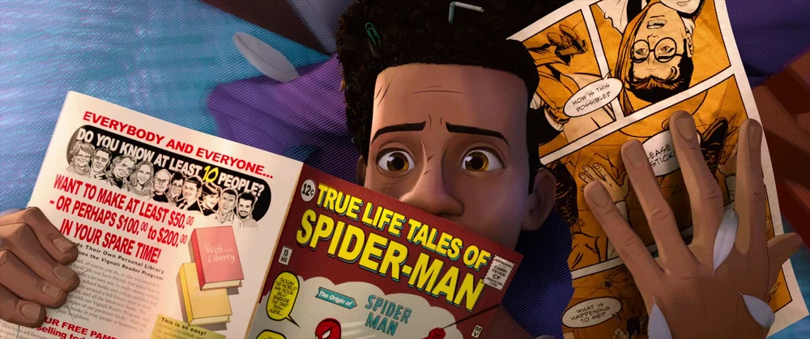

Homem-Aranha no Aranhaverso

Em Homem-Aranha no Aranhaverso, Miles Morales é um jovem negro do Brooklyn que se tornou o Homem-Aranha inspirado no legado de Peter Parker, já falecido. Entretanto, ao visitar o túmulo de seu ídolo em uma noite chuvosa, ele é surpreendido com a presença do próprio Peter, vestindo o traje do herói aracnídeo sob um sobretudo. A surpresa fica ainda maior quando Miles descobre que ele veio de uma dimensão paralela, assim como outras versões do Homem-Aranha.

Miles Morales

Peter B. Parker
Gwen Stacy
CURIOSIDADE
A primeira cena escrita pelos roteiristas para o projeto foi justamente a mais importante. Conhecido como “Salto de fé”, esse momento mostra Miles se aceitando como herói ao saltar de um arranha-céu, se tornando enfim o Homem-Aranha de seu universo. E esse momento épico acabou motivando todos a escreverem o resto do filme de uma forma tão épica quanto esta cena tão fantástica.



